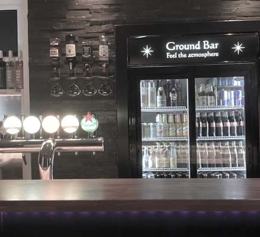
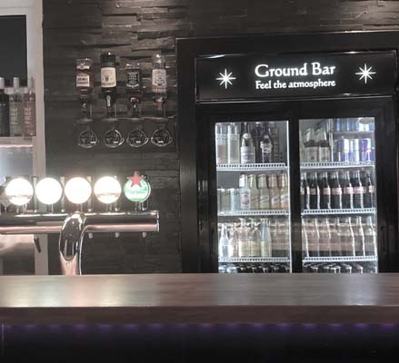
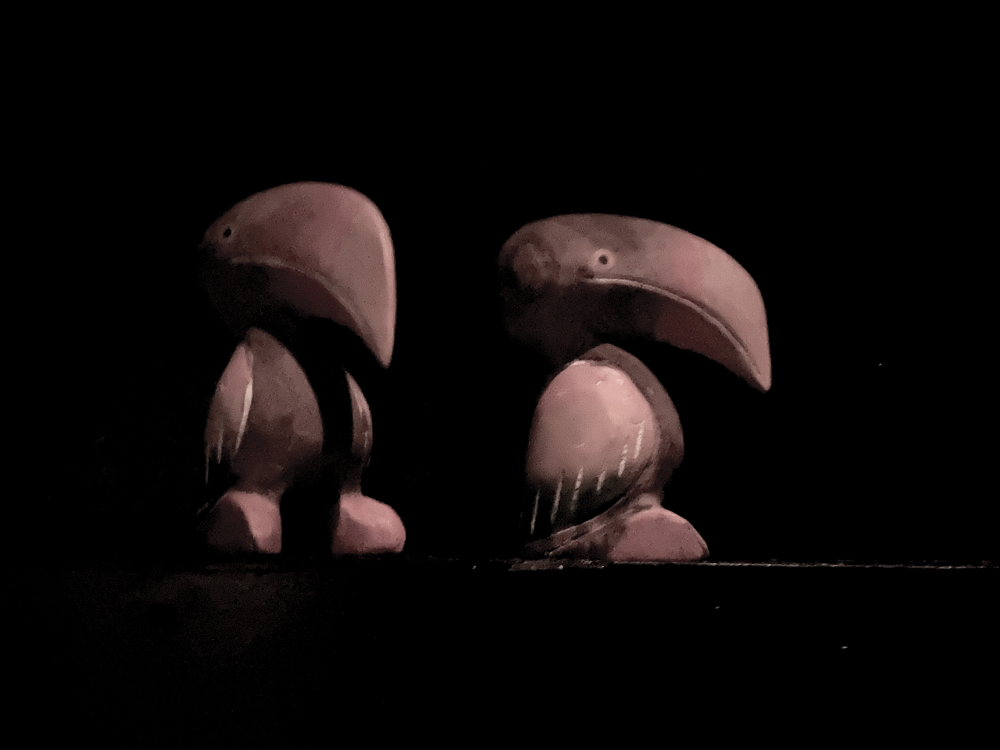

TUCAN CLUB
 

Tilgangen til reb kan være forskellig fra person til person - for nogen kan de endorfiner og hormoner det frigiver i hjernen udløse trancelignende tilstande - eller som en orgasme, der ikke umiddelbart forsvinder, da der ikke fysisk opnås udløsning.

For andre kan det handle mere om det visuelle udtryk - hvilke smukke former og mønstre, man kan skabe med reb på en krop og hvordan man kan gøre kroppen til en svævende skulptur ved hjælp af rebet.